第 8 回 CLI の設計と、雛形の生成¶
所要時間の目安: 3.5 時間 / 前提: 第 1〜3 回
この回のゴール¶
コマンドラインツール (CLI) の 設計の原則 (薄い CLI・終了コード・入力の検証) を説明できる。
argparseで、サブコマンドつきの CLI を作れる。cli.pyの構造を、全体から細部まで 読める。雛形生成 (テンプレートの展開) を、「計画」と「書き出し」に分ける設計を説明できる。
doctorのように、状態をデータで表し、表示と判定を分ける 設計を説明できる。
1. CLI の設計原則¶
DocsPipeline の CLI は、docspipeline build・docspipeline coverage のように、サブコマンド を持ちます。
作るときの原則は、次の 5 つです。
原則 |
意味 |
破ると、どうなるか |
|---|---|---|
薄い CLI |
コマンドは、引数を受けて、部品を呼ぶだけ。計算は、別の関数・モジュールに置く |
CLI が膨らみ、テストできない・再利用できない |
終了コードの約束 |
|
CI が、原因の種類を見分けられない |
打ち間違いを成功させない |
存在しないパス・綴りの誤りは、エラー |
検査が 黙って空 になる (「100%」と報告する) |
秘密を出さない |
環境変数は 名前だけ を示し、出力から値を伏せる |
トークンが、ログに残る |
依存を持ち込まない |
CLI の入口は、標準ライブラリだけ で動く |
Sphinx が無い環境で、 |
最後の原則は、実際に破って、事故になりました (第 10 回で振り返ります)。

2. argparse の基本¶
argparse は、Python の標準ライブラリの、コマンドライン引数の解析器 です。
# 実行できる
import argparse
parser = argparse.ArgumentParser(prog="demo", description="例")
parser.add_argument("paths", nargs="+") # 1 個以上の位置引数
parser.add_argument("--fail-under", type=float, metavar="PERCENT") # 値を取るオプション (型変換つき)
parser.add_argument("--format", choices=("text", "json"), default="text") # 選択肢
parser.add_argument("--force", action="store_true") # 付けたら True
parser.add_argument("--package", action="append", default=[]) # 何度でも指定できる (リストに溜まる)
args = parser.parse_args(["a.py", "b.py", "--fail-under", "80", "--package", "x", "--package", "y", "--force"])
print(args)
print(args.fail_under + 1, type(args.fail_under).__name__)
for bad in (["--format", "xml", "a.py"], [], ["a.py", "--fail-under", "abc"]):
try:
parser.parse_args(bad)
except SystemExit as exc:
print("引数", bad, "→ SystemExit(終了コード", exc.code, ")")
# 出力
Namespace(paths=['a.py', 'b.py'], fail_under=80.0, format='text', force=True, package=['x', 'y'])
81.0 float
引数 ['--format', 'xml', 'a.py'] → SystemExit(終了コード 2 )
引数 [] → SystemExit(終了コード 2 )
引数 ['a.py', '--fail-under', 'abc'] → SystemExit(終了コード 2 )
引数が間違っていると、
argparseは、使い方を表示して、終了コード 2 で終了 します (SystemExit(2))。 DocsPipeline の「2 = 使い方の誤り」は、argparseの標準の挙動と、同じ約束 です。type=float: 文字列"80"が、自動で80.0になる。変換できなければ、エラー。action="store_true"・"append": フラグ・複数指定。
サブコマンド¶
git commit・git push のように、動詞 で機能を分けるのが、サブコマンドです。
# 実行できる
import argparse
def cmd_add(args):
print("足す:", args.a + args.b)
return 0
def cmd_hello(args):
print(f"こんにちは、{args.name}")
return 0
parser = argparse.ArgumentParser(prog="demo")
sub = parser.add_subparsers(dest="command", required=True)
p = sub.add_parser("add", help="足し算")
p.add_argument("a", type=int)
p.add_argument("b", type=int)
p.set_defaults(func=cmd_add) # この動詞のときに、呼ぶ関数
p = sub.add_parser("hello", help="挨拶")
p.add_argument("name")
p.set_defaults(func=cmd_hello)
def main(argv=None):
args = parser.parse_args(argv)
return args.func(args) # 選ばれた関数を呼んで、終了コードを返す
print("終了コード:", main(["add", "2", "3"]))
print("終了コード:", main(["hello", "世界"]))
# 出力
足す: 5
終了コード: 0
こんにちは、世界
終了コード: 0
set_defaults(func=...) のパターン: 各サブコマンドに、呼ぶ関数を結び付けて おき、main は、
解析した結果の func を呼ぶだけ。if args.command == "add": ... elif ... の、長い分岐が要りません。
main(argv) が、argv を 引数で受け取り、終了コードを返す (sys.exit しない) 点も大事です。
テストで、main([...]) と呼んで、戻り値を調べられます。sys.exit は、一番外側 (__main__.py) だけが呼びます。
# 抜粋ファイル: docspipeline/__main__.py
import sys
from .cli import main
sys.exit(main())
# 抜粋ファイル: pyproject.toml
[project.scripts]
docspipeline = "docspipeline.cli:main"
python -m docspipeline→__main__.pyが動く。pip installすると、[project.scripts]により、docspipelineという コマンド が作られ、docspipeline.cli:mainを呼ぶ (戻り値が、そのまま終了コードになる)。
3. cli.py を読む¶
3.1 全体の構造¶

3.2 main¶
# 引用: docspipeline/cli.py::main
def main(argv: Sequence[str] | None = None) -> int:
"""CLI の入口。
Args:
argv: 引数。省略すると ``sys.argv`` を使う。
Returns:
終了コード。設定の誤りは 2。
"""
args = build_parser().parse_args(argv)
try:
return args.func(args)
except confluence.ConfluenceSettingsError as exc:
print(f"設定エラー: {exc}", file=sys.stderr)
return 2
args.func(args): サブコマンドの関数を呼ぶ。ConfluenceSettingsErrorを、ここで受ける: 設定の誤りは、例外を、1 か所で、終了コード 2 に変える。 各コマンドの中で、いちいちtryを書かなくてよい (例外の変換を、入口に集める)。
3.3 coverage: 入力の検証と、終了コード¶
# 引用: docspipeline/cli.py::cmd_coverage
def cmd_coverage(args: argparse.Namespace) -> int:
"""``coverage``: docstring が無い公開 API を一覧し、基準に満たなければ失敗にする。"""
try:
report = docstring_coverage.scan([Path(p) for p in args.paths])
except ValueError as exc:
print(f"エラー: {exc}", file=sys.stderr)
return 2
print(docstring_coverage.format_report(report, base=Path.cwd()))
if args.fail_under is not None and report.percent < args.fail_under:
print(f"カバレッジが基準 {args.fail_under}% を下回っています", file=sys.stderr)
return 1
return 0
読み方:
docstring_coverage.scan(...)は、存在しないパス・構文エラー でValueErrorを投げる (第 4 回)。cmd_coverageは、それを受けて、エラー: ...を標準エラーに出し、2を返す。結果を 標準出力 に出す (
format_report)。メッセージの種類で、出力先を分ける: 結果 → stdout、エラー → stderr。args.fail_under is not None and report.percent < args.fail_under→1(不合格)。基準を指定しなければ、不合格にはしない。それ以外は
0。
3 つの終了コードが、1 つの関数の中で、使い分けられている のが、分かります。
# 実行できる
import contextlib
import io
import tempfile
from pathlib import Path
from docspipeline import cli
def run(root, *argv):
out, err = io.StringIO(), io.StringIO()
with contextlib.redirect_stdout(out), contextlib.redirect_stderr(err):
code = cli.main(list(argv))
last = out.getvalue().strip().splitlines()[-1:] # 標準出力の、最後の行だけ
return code, last, err.getvalue().strip().replace(str(root), "<tmp>")
with tempfile.TemporaryDirectory() as tmp:
root = Path(tmp)
(root / "good.py").write_text('"""説明。"""\n\ndef f():\n """説明。"""\n')
(root / "bad.py").write_text("def g():\n pass\n")
print("存在しないパス :", run(root, "coverage", str(root / "none")))
print("全部ある :", run(root, "coverage", str(root / "good.py"), "--fail-under", "100"))
print("基準を下回る :", run(root, "coverage", str(root), "--fail-under", "100"))
print("基準なし :", run(root, "coverage", str(root)))
# 出力
存在しないパス : (2, [], 'エラー: パスがありません: <tmp>/none')
全部ある : (0, ['docstring のカバレッジ: 100.0% (2/2)'], '')
基準を下回る : (1, ['docstring のカバレッジ: 50.0% (2/4)'], 'カバレッジが基準 100.0% を下回っています')
基準なし : (0, ['docstring のカバレッジ: 50.0% (2/4)'], '')
(各行は、(終了コード, 標準出力の最後の行, 標準エラー) です。一時ディレクトリの名前は、<tmp> に置き換えています。)
3.4 子プロセスを起動する: _run と _sphinx¶
_run は第 3 回で読みました。_sphinx は、Sphinx を起動する、1 か所の入口 です。
# 引用: docspipeline/cli.py::_sphinx
def _sphinx(
builder: str, docs: Path, *, mode: str, strict: bool, extra_env: dict[str, str] | None = None, fresh: bool = False
) -> int:
"""Sphinx を走らせる。
Confluence のモードは **必ず引数で決める** (環境変数に残っていた値は使わない)。
``build`` が、環境の都合で意図せず公開してしまうのを防ぐため。
"""
out = docs / "_build" / builder
cmd = [sys.executable, "-m", "sphinx", "-b", builder, str(docs), str(out)]
if strict:
# 警告をエラー扱いにする。--keep-going で、止まらずに全部の警告を出す。
cmd += ["-W", "--keep-going"]
if fresh:
# 保存済みの環境 (増分ビルドのキャッシュ) を使わず、全部を読み直す。
# 環境変数の方針 (Mermaid が画像にならなければ失敗) は、読み込み時にしか効かない。
# 前のビルドが「コードのまま」で済ませたページを、変更なしとして飛ばされると、方針が素通りする。
cmd += ["-E"]
return _run(cmd, {confluence.MODE_ENV: mode, **(extra_env or {})})
部分 |
意味 |
|---|---|
|
Confluence のモードを、呼ぶ側が決める。環境変数に残っていた値で、意図せず公開しない (第 9 回) |
|
警告をエラーに。 |
|
保存した環境を使わない (第 6 回の、増分ビルドの落とし穴の対策) |
|
環境変数を、辞書で組み立てて渡す |
Sphinx を、import せずに、子プロセスとして起動する ことが、設計のポイントです。CLI が Sphinx を import すると、
Sphinx が無い環境で、CLI 全体が起動しません。子プロセスなら、build を使うときだけ、Sphinx が要ります。
3.5 各コマンドの本体¶
# 引用: docspipeline/cli.py::cmd_build
def cmd_build(args: argparse.Namespace) -> int:
"""``build``: Sphinx でビルドする。Confluence 形式でも公開はしない (``local`` 固定)。"""
extra = {"DOCSPIPELINE_MERMAID_MISSING": "error"} if args.require_mermaid else None
return _sphinx(
args.builder,
Path(args.docs),
mode="local",
strict=not args.no_strict,
extra_env=extra,
fresh=args.require_mermaid,
)
# 引用: docspipeline/cli.py::cmd_publish
def cmd_publish(args: argparse.Namespace) -> int:
"""``publish``: Confluence 形式でビルドする。公開するのは ``--mode publish`` のときだけ。
``dryrun`` と ``publish`` では、先に接続テストを行い、失敗したらビルドしない。
"""
if args.mode != "local":
if not _require_confluence_env():
return 2
if not args.skip_connection_test:
print("== 接続テスト ==")
rc = cmd_confluence_check(argparse.Namespace(docs=args.docs))
if rc != 0:
print("接続テストに失敗したため、中止します", file=sys.stderr)
return rc
print(f"== Confluence ビルド (mode={args.mode}) ==")
# 接続する・公開するときは、Mermaid が画像にならなければ失敗させる。
# 黙ってコードのままにすると、Confluence のページが、図の無いページに置き換わってしまう。
extra = {"DOCSPIPELINE_MERMAID_MISSING": "error"} if args.mode != "local" else None
return _sphinx(
"confluence", Path(args.docs), mode=args.mode, strict=args.strict, extra_env=extra, fresh=args.mode != "local"
)
cmd_publish を、流れにします。

順序が、安全のための設計 です。ネットワークにつなぐ前に、①環境変数、②接続テストを、この順に 確かめます。 (安い検査を先に、高い・危ない処理を後に。早く失敗する (fail fast))
3.6 build_parser¶
全部の引数の定義は、build_parser に 集まって います。
# 引用: docspipeline/cli.py::build_parser
def build_parser() -> argparse.ArgumentParser:
"""``docspipeline`` の引数の定義を作る。"""
parser = argparse.ArgumentParser(prog="docspipeline", description="API 文書の生成と Confluence への公開")
sub = parser.add_subparsers(dest="command", required=True)
p = sub.add_parser("init", help="リポジトリに docs/ の雛形と CI を作る")
p.add_argument("target", help="対象リポジトリのルート")
p.add_argument("--project", required=True, help="文書の題名")
p.add_argument("--author", required=True)
p.add_argument(
"--package", action="append", default=[], metavar="PATH", help="Python のソース (docs/ からの相対)。複数可"
)
p.add_argument("--cpp", action="append", default=[], metavar="PATH", help="C++ のソース (docs/ からの相対)。複数可")
p.add_argument("--hou", action="store_true", help="Houdini の hou スタブを使う")
p.add_argument(
"--min-coverage", type=int, default=80, metavar="PERCENT", help="CI の docstring 網羅の基準 (既定 80)"
)
p.add_argument("--force", action="store_true", help="既存のファイルを上書きする")
p.set_defaults(func=cmd_init)
p = sub.add_parser("build", help="Sphinx でビルドする (既定は警告をエラー扱い。公開はしない)")
p.add_argument("docs", nargs="?", default="docs")
p.add_argument("-b", "--builder", default="html")
p.add_argument("--no-strict", action="store_true", help="警告をエラー扱いにしない")
p.add_argument("--require-mermaid", action="store_true", help="mmdc が無ければ失敗させる (CI 用)")
p.set_defaults(func=cmd_build)
p = sub.add_parser("linkcheck", help="外部リンクの切れを確認する")
p.add_argument("docs", nargs="?", default="docs")
p.set_defaults(func=cmd_linkcheck)
p = sub.add_parser("coverage", help="docstring が無い公開 API を一覧する")
p.add_argument("paths", nargs="+")
p.add_argument("--fail-under", type=float, metavar="PERCENT")
p.set_defaults(func=cmd_coverage)
p = sub.add_parser("check-diagrams", help=".drawio に書き出した SVG があるか確認する")
p.add_argument("docs", nargs="?", default="docs")
p.set_defaults(func=cmd_check_diagrams)
p = sub.add_parser("confluence-check", help="Confluence への接続・認証・権限を確認する")
p.add_argument("docs", nargs="?", default="docs")
p.set_defaults(func=cmd_confluence_check)
p = sub.add_parser("publish", help="Confluence 形式でビルドする。公開は --mode publish のときだけ")
p.add_argument("docs", nargs="?", default="docs")
p.add_argument(
"--mode",
choices=confluence.MODES,
default="local",
help="local: 出力のみ (既定) / dryrun: 接続して確認のみ / publish: 公開",
)
p.add_argument("--skip-connection-test", action="store_true")
# 文書の品質は build (-W) で止める。コメント付きのページを飛ばしたときの警告で、公開まで失敗させない
p.add_argument("--strict", action="store_true", help="警告をエラー扱いにする (既定は警告を表示するだけ)")
p.set_defaults(func=cmd_publish)
p = sub.add_parser("map", help="ソースを構文解析して、依存の地図を作る (外部へは送信しない)")
p.add_argument("package", help="__init__.py を持つディレクトリ")
p.add_argument("--format", choices=("markdown", "mermaid", "json"), default="markdown")
p.add_argument("-o", "--output", help="書き出すファイル (省略すると標準出力)")
p.add_argument("--fail-on-cycle", action="store_true", help="import の循環があれば失敗させる")
p.set_defaults(func=cmd_map)
p = sub.add_parser("check-mermaid", help="Mermaid ブロックが、標準の %%%%{init}%%%% の行で始まるか確認する")
p.add_argument("paths", nargs="*", default=["docs", "README.md"], help="検査する場所 (既定: docs と README.md)")
p.add_argument("--fix", action="store_true", help="足りない行を入れる")
p.set_defaults(func=cmd_check_mermaid)
p = sub.add_parser("mermaid-style", help="標準の %%%%{init}%%%% の行と classDef を表示する")
p.set_defaults(func=cmd_mermaid_style)
p = sub.add_parser("doctor", help="手元の環境で使える機能を確認する")
p.set_defaults(func=cmd_doctor)
return parser
サブコマンドごとの定義が、同じ形 で並ぶ (
add_parser→add_argument... →set_defaults)。新しいコマンドも、この形で足す。help=の文は、--helpに出る。日本語で、何をするか を書く。注意:
argparseのhelpの中の%は、書式の記号 として扱われる。%%と書くと、%が出る (%%{init}%%を見せたいので、%%%%{init}%%%%と書いてある)。
4. 雛形の生成 (scaffold)¶
docspipeline init は、リポジトリに、docs/ の雛形 と CI の設定 を作ります。テンプレートは、パッケージに同梱されています。
4.1 設計: 「計画」と「書き出し」を分ける¶

「まず計画を立て、全部が問題なければ、書く」。途中で失敗して、半端なファイル群 が残るのを、避けられます。
# 引用: docspipeline/scaffold.py::Options
@dataclass(frozen=True)
class Options:
"""``init`` の入力。"""
target: Path
project: str
author: str
package: tuple[str, ...] = ()
cpp: tuple[str, ...] = ()
hou: bool = False
min_coverage: int = 80
# 引用: docspipeline/scaffold.py::plan
def plan(opts: Options) -> dict[Path, str]:
"""書き出すファイルと中身を決める。ファイルには触れない。"""
values = _values(opts)
result: dict[Path, str] = {}
for src in sorted(TEMPLATES.rglob("*.tmpl")):
rel = src.relative_to(TEMPLATES)
if rel.with_suffix("").name == "cpp.rst" and not opts.cpp:
continue
if rel.with_suffix("").name == "api.rst" and not opts.package:
continue
# 1 回の走査で置き換える。値の中に @@名前@@ があっても、さらに置き換わらない
text = re.sub(r"@@(\w+)@@", lambda m: values.get(m.group(1), m.group(0)), src.read_text(encoding="utf-8"))
result[opts.target / _destination(rel)] = text
return result
# 引用: docspipeline/scaffold.py::write
def write(opts: Options, *, force: bool = False) -> list[Path]:
"""雛形を書き出して、作ったファイルを返す。
Raises:
ScaffoldError: 既存のファイルがあり、``force`` が偽のとき。何も書かずに止まる。
"""
files = plan(opts)
existing = [p for p in files if p.exists()]
if existing and not force:
raise ScaffoldError(existing)
for dest, text in files.items():
dest.parent.mkdir(parents=True, exist_ok=True)
dest.write_text(text, encoding="utf-8")
return list(files)
Options: 利用者の指定を、不変のdataclassにまとめる (第 1 回)。関数に、target・project・... を何個も渡さずに済む。plan: テンプレートを読み、@@名前@@を 1 回の走査で 置き換える (第 2 回)。ファイルには触れず、{パス: 中身}の辞書を返す。 → テストが簡単 (ファイルを作らず、辞書の中身を調べられる)。write:planの結果から、既存のファイルを調べて、あればScaffoldError(forceなら上書き)。書くのは、最後。
# 実行できる
import tempfile
from pathlib import Path
from docspipeline import scaffold
with tempfile.TemporaryDirectory() as tmp:
target = Path(tmp)
(target / "src").mkdir()
opts = scaffold.Options(target=target, project="サンプル", author="me", package=("../src",), min_coverage=90)
files = scaffold.plan(opts) # 計画だけ。ファイルは作られない
print("計画されたファイル:")
for path in sorted(files):
print(" ", path.relative_to(target).as_posix())
print("書く前に、存在するか:", any(p.exists() for p in files))
conf = next(text for path, text in files.items() if path.name == "conf.py")
print([line for line in conf.splitlines() if "project=" in line or "package_paths" in line])
workflow = next(text for path, text in files.items() if path.name == "docs.yml")
print([line.strip() for line in workflow.splitlines() if "coverage" in line and "docspipeline" in line])
scaffold.write(opts)
print("書いた後に、存在するか:", all(p.exists() for p in files))
try:
scaffold.write(opts) # もう一度 (既存あり)
except scaffold.ScaffoldError as exc:
print("ScaffoldError:", len(exc.existing), "個が既にある")
print("missing_sources:", [p.name for p in scaffold.missing_sources(scaffold.Options(target, "X", "me", package=("../scr",)))])
# 出力
計画されたファイル:
.github/workflows/docs.yml
docs/.gitignore
docs/api.rst
docs/conf.py
docs/design.rst
docs/index.rst
docs/overview.rst
docs/page-template.rst.tmpl
書く前に、存在するか: False
[" project='サンプル',", " package_paths=['../src'],"]
['run: docspipeline coverage src --fail-under 90']
書いた後に、存在するか: True
ScaffoldError: 8 個が既にある
missing_sources: ['scr']
4.2 書き出し先の規則¶
テンプレートの 名前 と、書き出す 名前 は、同じではありません。
# 引用: docspipeline/scaffold.py::_destination
def _destination(rel: Path) -> Path:
"""雛形の相対パスから、書き出し先の相対パスを決める。"""
rel = rel.with_suffix("") # 末尾の .tmpl を外す
if rel.parts[0] == "github":
rel = Path(".github", *rel.parts[1:])
if rel.name == "gitignore":
rel = rel.with_name(".gitignore")
if rel.name == "page-template.rst":
# 雛形は Sphinx に読ませない (toctree に無い警告を避ける) ので、拡張子を残す
rel = rel.with_name("page-template.rst.tmpl")
return rel
テンプレートの名前 |
書き出す名前 |
理由 |
|---|---|---|
|
|
|
|
|
|
|
|
〃 |
|
|
雛形そのものは、Sphinx に 読ませない (拡張子を残す) |
なぜ、テンプレート側の名前にドットを付けないのか: ドットで始まるファイルは、パッケージの配布物 (wheel) に含まれない ことがありました
(実際に、.gitignore.tmpl が、wheel から漏れました)。そこで、テンプレートの名前は、ドットなしにして、書き出すときに付ける ようにしました。
「配布物を作って、中身を確かめる」までが、テスト です (第 12 回)。
4.3 入力の検証: 実在しない場所¶
# 引用: docspipeline/scaffold.py::missing_sources
def missing_sources(opts: Options) -> list[Path]:
"""``--package`` / ``--cpp`` で指定された、実在しないソースの場所を返す (``docs/`` からの相対で解決)。
打ち間違いのまま作ると、API ページが空で、CI が何も検査しない文書になる。
"""
docs = opts.target / "docs"
return [(docs / p).resolve() for p in (*opts.package, *opts.cpp) if not (docs / p).resolve().is_dir()]
--package ../scr のような 打ち間違い を、書き出す 前 に見つけます。見逃すと、API ページが空の文書と、何も検査しない CI ができます。
cmd_init は、これを受けて、何も書かずに終了コード 2 にします。
# 引用: docspipeline/cli.py::cmd_init
def cmd_init(args: argparse.Namespace) -> int:
"""``init``: ``docs/`` の雛形と CI の設定を作る。既存のファイルは ``--force`` なしでは上書きしない。"""
opts = scaffold.Options(
target=Path(args.target).resolve(),
project=args.project,
author=args.author,
package=tuple(args.package),
cpp=tuple(args.cpp),
hou=args.hou,
min_coverage=args.min_coverage,
)
missing = scaffold.missing_sources(opts)
if missing:
for path in missing:
print(f"エラー: ソースの場所がありません: {path}", file=sys.stderr)
print("--package / --cpp は、docs/ からの相対パスで、実在する場所を指定してください", file=sys.stderr)
return 2
try:
created = scaffold.write(opts, force=args.force)
except scaffold.ScaffoldError as exc:
for path in exc.existing:
print(f"既にあります: {path}", file=sys.stderr)
print("上書きするには --force を付けてください", file=sys.stderr)
return 1
for path in created:
print(f"作成: {path}")
print(f"次の手順: pip install 'docspipeline[docs]' && docspipeline build {opts.target / 'docs'}")
return 0
5. doctor: 状態を「データ」で表す¶
docspipeline doctor は、手元の環境で 何が使えるか を一覧します。設計のポイントは、判定 (データ) と、表示 (文字列) と、終了コード が、別の関数 に分かれていることです。
# 引用: docspipeline/doctor.py::Check
@dataclass(frozen=True)
class Check:
"""確認の結果 1 件。"""
name: str
ok: bool
detail: str
required: bool = False
# 引用: docspipeline/doctor.py::format_checks
def format_checks(checks: list[Check]) -> str:
"""人が読む形に整形する。"""
lines = []
for c in checks:
mark = "OK " if c.ok else ("NG " if c.required else "なし")
lines.append(f"[{mark}] {c.name}: {c.detail}")
return "\n".join(lines)
# 引用: docspipeline/doctor.py::exit_code
def exit_code(checks: list[Check]) -> int:
"""必須の項目が 1 つでも失敗していれば 1。"""
return 1 if any(c.required and not c.ok for c in checks) else 0
Check: 1 項目の結果 (name・ok・detail・required)。不変のデータ。run_checks: 環境を調べて、Checkの リスト を返す (表示しない)。format_checks: リストを、人が読む形にする (OK・NG・なし)。exit_code: 必須の項目が失敗 していれば1。NG(必須) となし(任意) の違いを、requiredの 1 つの印 で表す。
# 実行できる
from docspipeline import doctor
checks = [
doctor.Check("Sphinx", True, "9.x", required=True),
doctor.Check("mmdc", False, "無い: 図はコードのまま出る"),
doctor.Check("Breathe", False, "pip install 'breathe'", required=False),
]
print(doctor.format_checks(checks))
print("終了コード:", doctor.exit_code(checks))
print("必須が欠けると:", doctor.exit_code([*checks, doctor.Check("Python", False, "3.9", required=True)]))
env = {"DOCSPIPELINE_CONFLUENCE_MODE": "publsh", "CONFLUENCE_API_TOKEN": "tok-0123456789abcdef"}
rows = doctor.run_checks(env)
mode = next(c for c in rows if c.name == "Confluence のモード")
secret_rows = [c for c in rows if "tok-0123456789abcdef" in c.detail]
print("モード:", mode.ok, "|", mode.detail)
print("トークンの値が、出力に含まれる行:", len(secret_rows), "件")
# 出力
[OK ] Sphinx: 9.x
[なし] mmdc: 無い: 図はコードのまま出る
[なし] Breathe: pip install 'breathe'
終了コード: 0
必須が欠けると: 1
モード: False | DOCSPIPELINE_CONFLUENCE_MODE は local, dryrun, publish のいずれかにしてください (指定値: 'publsh')
トークンの値が、出力に含まれる行: 0 件
綴りの誤りの、モード は、
ok=Falseで、メッセージつき で返る (例外にせず、一覧の 1 行にする。doctorは、問題を報告する道具 だから)。トークンの 値は、どの行にも出ない (名前の有無だけ)。
6. 設計の振り返り: 依存の向き¶
CLI の入口が Sphinx を import しない こと (第 7 回の core と拡張) は、構造のテストで守られています。

(図は 主なもの だけです。cli は、ほかに mmdc・diagrams・共通部品の files も import します。全部の矢印は、第 11 回の構成図 (module-map) にあります。)
実際の依存を、第 5 回の docspipeline map で確かめます。
# 実行できる
from pathlib import Path
import docspipeline
from docspipeline.structure_map import scan_package
graph = scan_package(Path(docspipeline.__file__).parent)
cli = graph.get("docspipeline.cli")
print("cli が import する (内部):", sorted(n.split(".")[-1] for n in cli.imports))
print("cli が import する (外部):", sorted(cli.external))
print("sphinx / docutils を import するモジュール:",
sorted(m.name.split(".")[-1] for m in graph.modules if m.external & {"sphinx", "docutils"}))
# 出力
cli が import する (内部): ['confluence', 'diagrams', 'docstring_coverage', 'doctor', 'files', 'mmdc', 'scaffold', 'structure_map']
cli が import する (外部): ['argparse', 'collections', 'os', 'pathlib', 'subprocess', 'sys']
sphinx / docutils を import するモジュール: ['doxygen', 'guard', 'mermaid', 'prompt']
cli の外部の import は、標準ライブラリだけ (argparse・subprocess・sys など)。
Sphinx を import するのは、拡張だけ です。
ハンズオン¶
docspipeline --helpとdocspipeline init --helpを実行して、build_parserの定義と見比べる。docspipeline init /tmp/demo --project "My Tool" --author me --package ../src; echo $?と、/tmp/demo/srcを作ってから 同じコマンドを実行して、違いを見る。一時ディレクトリで
docspipeline initした結果のdocs/conf.pyと.github/workflows/docs.ymlを読む。
確認問題¶
「薄い CLI」とは、どういう設計ですか。利点を 2 つ挙げてください。
main(argv)が、sys.exitを呼ばず、終了コードを返す のは、なぜですか。終了コード
1と2の使い分けを、例とともに説明してください。set_defaults(func=...)のパターンの利点は何ですか。planとwriteを分ける利点は何ですか。テンプレートの名前に、ドットを付けず (
gitignore.tmpl)、書き出すときに付ける理由は何ですか。doctorで、Check(データ)・format_checks・exit_codeを、別の関数に分ける利点は何ですか。(書く問題)
argparseで、wcコマンドのように、ファイルを 1 個以上受け取り、各ファイルの行数 を表示する CLI のmain(argv)を書いてください。 存在しないファイルがあれば、標準エラーに書いて、終了コード 2 を返します。
解答¶
引数を受けて、部品を呼ぶだけ の CLI。計算は、別のモジュールの関数に置く。 利点: (a) 部品を、CLI 抜きで 単体テスト できる。(b) 別の入口 (Python から・別のコマンド) からも 再利用 できる。
テストで、
main([...])と呼んで、戻り値を調べられる (sys.exitは、プロセスを終わらせてしまう)。sys.exitは、一番外側 (__main__.py・エントリーポイント) だけが呼ぶ。2= 使い方・入力の誤り (処理を始められなかった。例: 存在しないパス、環境変数の不足)。直すのは、入力・設定。1= 処理は動いたが、不合格 (例: docstring が基準未満、循環がある)。直すのは、コードや文書。 CI の担当者が、終了コードだけで、対応の方向を見分けられる。if/elifの長い分岐が要らない。サブコマンドの定義と、その実装の対応 が、build_parserの中で、隣り合って並ぶ。 新しいコマンドを足すとき、mainを触らずに済む。計画の段階は、ファイルに触れない ので、テストが簡単で、安全。全部の検査 (既存のファイルなど) に 合格してから 書くので、 途中で失敗しても、半端なファイル群が残らない。
ドットで始まるファイルは、パッケージの配布物 (wheel) に 含まれないことがある (実際に、漏れた)。 ドットなしの名前なら、確実に含まれる。書き出す側で、ドットを付ける。
判定 (データ)・表示・終了コード が、それぞれ別の理由で変わる。別にしておけば、 (a) 表示を変えても判定は壊れない、(b) ファイルや環境を使わず、
Checkのリストを作るだけで、表示と終了コードをテストできる、 (c) 将来、JSON など別の表示を足しやすい。例 (実行して確かめてある):
# 実行できる
import argparse
import contextlib
import io
import sys
import tempfile
from pathlib import Path
def main(argv=None):
parser = argparse.ArgumentParser(prog="lines")
parser.add_argument("files", nargs="+")
args = parser.parse_args(argv)
missing = [f for f in args.files if not Path(f).is_file()]
if missing:
for name in missing:
print(f"エラー: ファイルがありません: {name}", file=sys.stderr)
return 2
for name in args.files:
print(f"{len(Path(name).read_text(encoding='utf-8').splitlines()):>4} {Path(name).name}")
return 0
with tempfile.TemporaryDirectory() as tmp:
a, b = Path(tmp) / "a.txt", Path(tmp) / "b.txt"
a.write_text("1\n2\n3\n")
b.write_text("x\n")
print("終了コード:", main([str(a), str(b)]))
err = io.StringIO()
with contextlib.redirect_stderr(err):
code = main([str(a), str(Path(tmp) / "none.txt")])
print("終了コード:", code, "|", err.getvalue().strip().replace(tmp, "<tmp>"))
# 出力
3 a.txt
1 b.txt
終了コード: 0
終了コード: 2 | エラー: ファイルがありません: <tmp>/none.txt
まとめ¶
概念 |
要点 |
このリポジトリでの例 |
|---|---|---|
薄い CLI |
引数を受けて、部品を呼ぶだけ |
|
終了コード |
|
|
|
終了コードを 返す。 |
|
サブコマンド |
|
|
例外の変換 |
設定の誤りを、入口で終了コード 2 に |
|
打ち間違い |
黙って成功させず、書く前に止める |
|
計画と書き出し |
副作用を、最後の 1 手に |
|
データで表す |
判定・表示・終了コードを分ける |
|
依存の向き |
CLI は、標準ライブラリだけ。Sphinx は子プロセス |
|
次回¶
第 9 回 公開と安全設計: 「公開する」処理の 脅威 を整理し、安全装置を、設計から読み解きます。